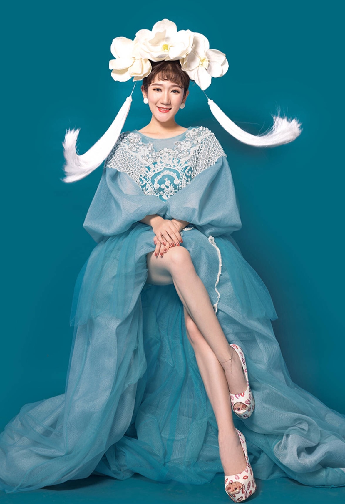

个人经历
拥有普通话2甲证书
拥有中国舞蹈家协会【小舞星】教师资格证书
曾出演过多部话剧：
【女兵连来了个男家属】--饰演：尼玛
【天堂隔壁是疯人院】--饰演：周文天
【雷雨】--饰演：四凤
【日出】--饰演：小东西
【午夜哈瓦那】--饰演：莫茜
【性情男女】--饰演：女儿
【天上人间】--饰演：仙女
【死罪】--饰演：鬼魂
【荒诞剧】--饰演：小媳妇儿
【隐婚男女】--饰演：张静宜
【大葱炒牛肉】等等舞台剧
在毕业实训里拍摄古装戏【花木兰】饰演--公主贴身丫鬟：小桃【丫鬟主管】
拍摄微电影 ：
【友情与爱情】--饰演：哲
【到底是谁犯的错】--饰演：某同学
【时光】--饰演：璇子
【猪八戒与媳妇儿】--饰演：媳妇儿
【时间线】--饰演：女孩儿
【去赶集的妮子】--饰演：妮子
【误会装】--饰演：某同学
【返校】--饰演：何思璇
演艺经历 2011
参与节目【过年七天乐】，【超级红歌会】节目录制
三月 在广东省佛山市天麦广告有限公司担任 导演助理 、创作部编导
为顺德电视台【人小大件事】栏目组广告配音
在佛山市电视台顺德分台假期培训 担任舞蹈、表演老师
佛山市首部舞台音乐剧【流经岁月】演出
佛山市首部青春教育实验电视电影【青春三次方】拍摄
佛山市关爱桂城公益宣传片拍摄 【关爱星星儿】爱心宣传片
在北京进【裂变】剧组，饰演--：蒋局长的相亲对象（特约角色）

演艺经历 2012
参与大型儿童剧【魔法旅行团】巡演
参与北京新媒体儿童剧【布噜布噜第一季--向奇幻山口进发】演出以及新闻发布会
参与【佳能，感动无处不在】宣传片拍摄
参与云南白药【我要上封面】唱歌比赛 获得一等奖
担任北京市“梦工坊大型儿童剧”导演 作品--【丑小鸭】
参与上海市纳米魔幻城“梦是真的”大型儿童剧【魔法旅行团】新闻发布会以及演出

演艺经历 2013
参与北京剧院大型儿童剧【功夫熊猫】演出
为北京星梦工坊的儿童剧【爱丽丝梦游仙境】、【匹诺曹】配音
参与大型儿童剧【魔法旅行团】全国巡演

演艺经历 2014
参与北京山东省济南市联合利华发布会小型儿童音乐剧
参与北京工人体育馆小童星演唱会演出策划
“6月1日”儿童节 在长沙参加大型儿童剧【魔法旅行团】的主创与演出
参与北京市文化局 2014北京“春苗行动 优秀剧目”【魔法旅行团】的演出
参与“华为荣耀”手机广告宣传片拍摄
参加“乐事TV”产品广告拍摄
演艺经历 2015
加入【央视娱乐传媒】活动部，担任导演助理以及行政管理职位
参与央视娱乐传媒“我是主角”儿童戏剧精品体验计划启动仪式以及演出
参与童星宝贝“乐事TV”产品拍摄
参与儿童剧【快乐，家家家】演出
参与儿童剧【布噜布噜第二季--勇闯谎话林】的创作
参与北京新媒体儿童剧【布噜布噜第一季--向奇幻山口进发】全国巡演
参与北京市“链家地产”运动会开幕仪式--开场舞、领操
参与江西省南昌市“品盛影视传媒”微电影

演艺经历 2016
参与吉林市元旦晚会视频录制
参与江西省南昌市【大话戏剧社】特约演出
参与儿童剧【绿色大作战】饰演：绿草
参与儿童剧【棉花糖与云朵妈妈】饰演：大头儿子
参与儿童剧【奔跑吧，小球星】 饰演：淘淘
参与儿童剧【熊猫与小鼹鼠】饰演：刺猬甜甜 、小鼹鼠
参与中国木偶剧院儿童剧【皮诺曹神州行】饰演：马仔
担任石景山文化宫 表演、舞蹈老师
演艺经历 2017
担任中国人民大学附属小学表演老师
参与贝瓦儿歌儿童剧【小河狸贝瓦之闪闪魔法星】饰演：苗苗
参与中国宋庆龄文化基金会儿童剧【天空城堡】饰演：慧慧
担任北京清华大学附属小学 表演老师
参与中国首部中学生丝路论坛剧场体验剧【丝路少年志之通关“密码”】饰演：云丹妮
担任海淀区定慧里小学表演老师
担任金娃娃童心教育机构表演老师